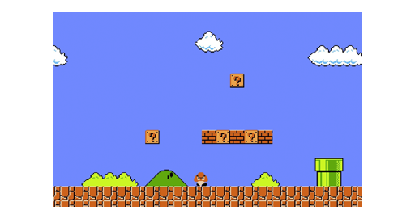
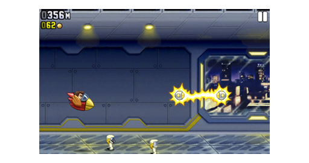
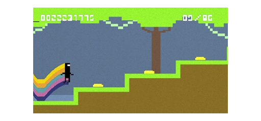
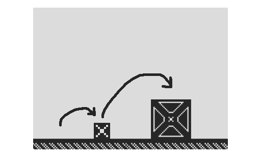
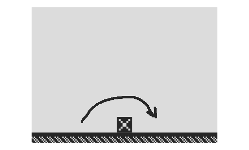
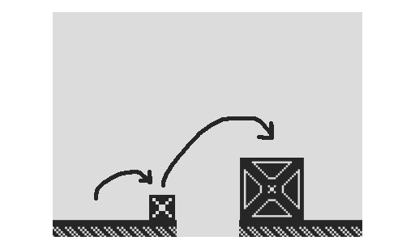
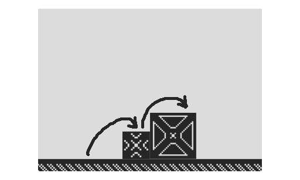
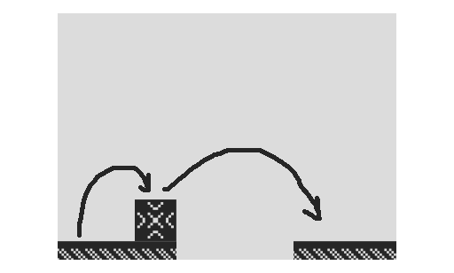
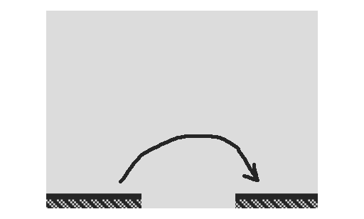

#24 ICM final proposal · runner 0.0
This is the first blogpost regarding what my project plans and ideas for the icm final project are.
Im doing a 2d platformer game.
I'll be creating all the assets and everything that comes with it. There are two main directions where this could go; one of them is a level based platformer, where all the levels are predesigned and there's a clear progression between them, each getting more challenging until you reach the end. the second option is a endless runner. this option conceptually is much more simple but technically will be difficult.
There's also the possibility of creating a combination of both where there's levels but they are created by the system and get more and more difficult each time. In this case the technical challenges are also clearly strong.
The first iteration will be controlled via the keyboard, once the final version of the game is satisfactory I'll add other supports like a standard gaming controller or others.









gP